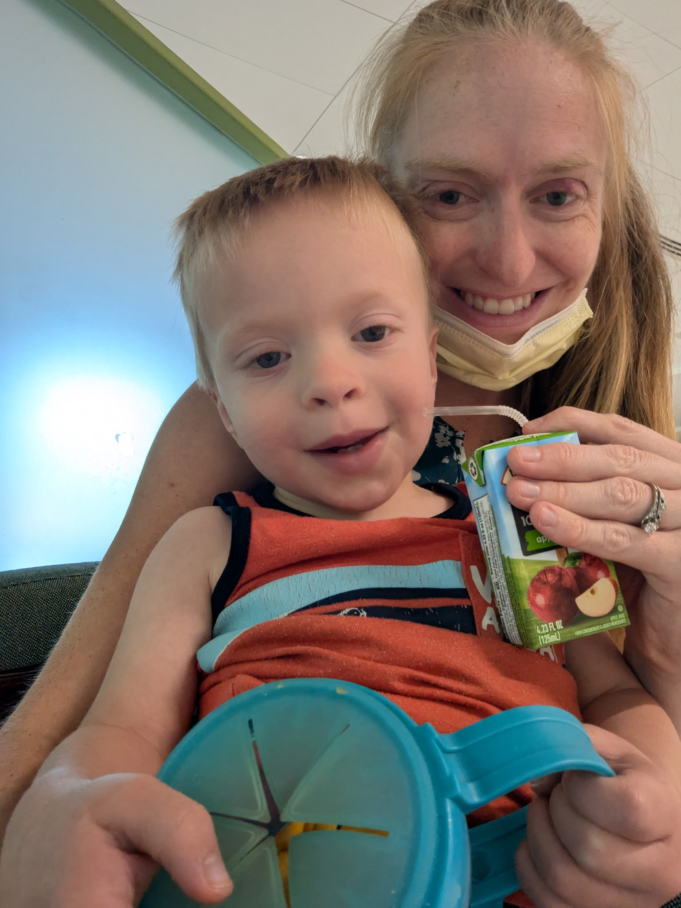
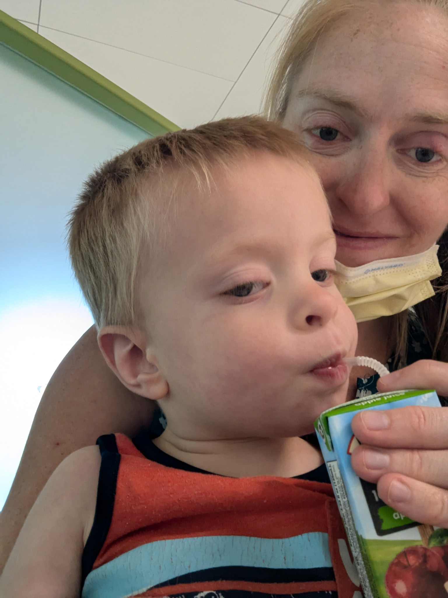
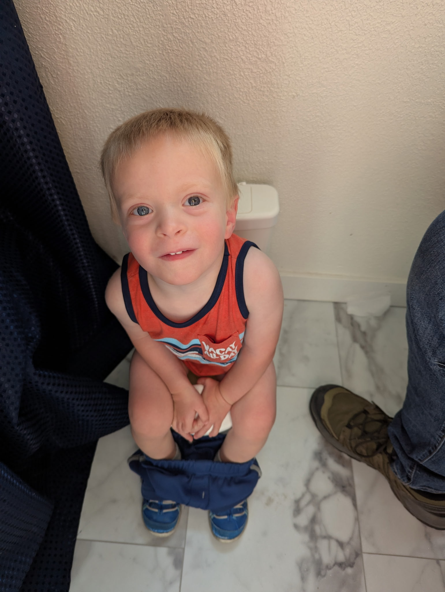

MRI Results and Treatment Schedule
June 12, 2026
Today was another step in the process. While Elias and I went into work, Jerusha took Micaiah for his MRI appointment as well as a hematology and oncology consultation. It was a long day for Micaiah. He left home before 8am and didn't get home until 6pm. Since they put him under for the MRI, he wasn't able to eat anything throughout the morning. Once he came to, he devoured his snacks. Apparently the precise concoction they give Micaiah to put him under is different depending on the needs for each appointment. Whatever they used today, I hope they do it again. Jerusha reported that it turned him into "Loopy Micaiah." As he was coming to, he kept playing with his own dizziness, turning and shaking his head around and producing uncontrollable giggles.


Hungry Boy getting his snack on
Jerusha reports that he was a total champ throughout the day. As his personality continues to come out, he is more and more a master of charisma. His regular chants (or maybe shouts) of "E-I-E-I-O" cracked smiles throughout the waiting room with patients and staff alike. He kept playing peek-a-boo with people through the glass doors, literally making people laugh out loud. All the healthcare workers there certainly know how to care for kids well. Jerusha never felt rushed out before questions were answered, and they often had extra people in the room to help play with Micaiah so she could focus on the information they were giving her.
We don't yet have the full results from the MRI, but they were able to give us some preliminary results. There were two main areas of concern going into this. The first was that there could be a tumor growth on the brain since the tumor was already in both eyes. That turned out not to be the case. The second concern was that the tumors might be growing into the veins of the eyes, which would increase the risk of spread elsewhere. If the tumors had grown into the veins like that, they would recommend removal of the eye to prevent the spread throughout the body. While the preliminary results didn't show that per se, the tumor in the left eye was very close to some of those veins. The complete MRI results should give us more information, but we are still prayerful that the tumors have not grown into those veins and that we will be able to keep both his eyes.
After the MRI, they discussed treatment. Our first round of treatment for Micaiah will be Tuesday/Wednesday of this coming week (6/16-17). Since this will require multiple rounds of treatment, they're going to put in a port (a little IV access point) so they can avoid pinching him every time. They were encouraging about the treatment though, saying that it's not quite like they show in the movies. They were saying that little kids often do well, wandering around and being silly or playing while receiving treatment. They also quelled some of our fears regarding life-long side effects of interrupting or harming his developmental process. Apparently the specific treatments he will be receiving will not inhibit his development, and kids receiving it often grow up without any frailty. Of course, there will be some side effects. He will lose his hair, he won't have as much energy, he might have nausea, and he will probably be a bit lethargic. With this specific treatment, he will also have an elevated risk of other cancers developing later in life. However, given the fact that he has this retinoblastoma in both eyes, he will already have that elevated risk regardless of the side effects to this treatment. Still, if the treatment is effective, he can lead a very normal life.
When he got home, he was our normal little boy. He started romping around like any other day. One new development was that he ran down the hall and stood next to the training toilet. I didn't think much of it because he has been sitting on it for fun recently. What got my attention was when he quickly ran back to my and made an expressive grunting sound as he indicated he had diaper needs. When I asked if he had to go potty, he said, "Yeah." And he did! It was his first potty on the training toilet. As silly as it sounds, that experience was a sweet mercy and a reminder that our lives will continue to have blessings—even in this season.

Big boy on a little potty!